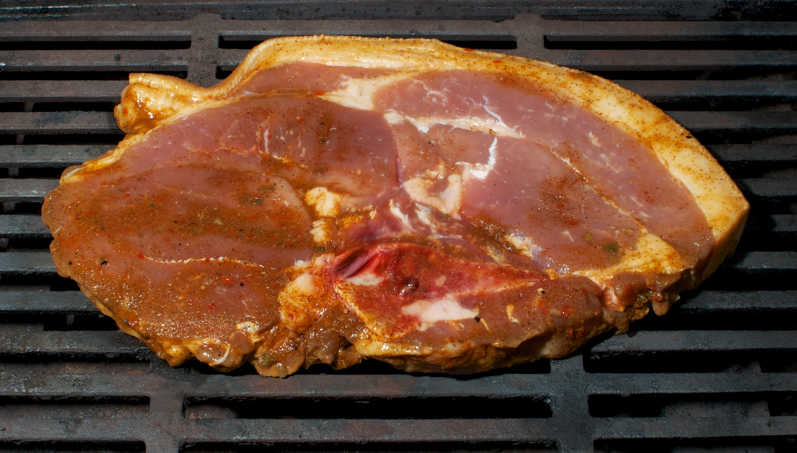

お肉の部位と栄養図鑑
ぶたのももは、どんな肉？
ぶたの後ろ脚の上のほうが「もも」です。切った面を見て、うす切りとかたまりの使い分けを考えます。
売り場では「もも」の表示を見てから、料理に合う厚みと、外側の白っぽい脂身が残っているかを確かめます。
赤身と、外側の白い部分を見る

骨つきのももを輪切りにした、スウェーデンの切り方の例です。写真は調味料をつけた生のお肉で、見える色の一部は調味料の色です。骨を取りのぞいて売られるもも肉とは、切り方がちがいます。
写真 Bengt Bäverman「Flintastek, rå」（2012年8月3日） / CC BY-SA 3.0。元の写真をそのまま掲載しています。

写真の切り方が後ろあしのももにあたることは、スウェーデンの食肉業界団体 Svenskt Kött の部位の説明（スウェーデン語）で確かめられます。下の図では、外側の脂身を残した場合と取りのぞいた場合を見くらべます。
うす切りとかたまり、どちらにする？
- うす切り：炒めものや、さっと火を通す料理に。広げやすい厚さのものをえらびます。
- かたまり：焼き豚などに。形と厚みがそろったものをえらび、厚いところの中心で加熱を確かめます。
- 同じ「もも」でも、外側に脂身が残っているものと、赤身だけのものがあります。売り場の表示も確かめます。
成分表の数字を読む
| 成分 | 量 |
|---|---|
| たんぱく質 | 22.1 g |
| 脂質 | 3.6 g |
| 鉄 | 0.9 mg |
文部科学省「日本食品標準成分表（八訂）増補2023年」の分類。脂身つきの肉や焼いたあとの肉、料理1人分の値とはちがいます。